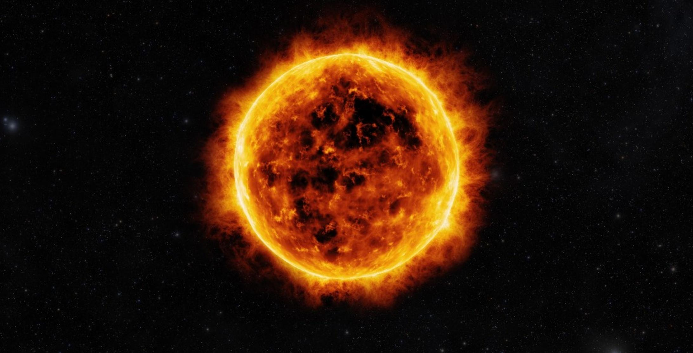

Sunspots And Solarflare
Sunspots are dark planet-sized regions that appear on the surface of the Earth. Now, the interesting part is that they are the coolest parts of the sun with the strongest magnetic field 2500 times stronger than Earth's or anywhere else on the sun. These parts on the sun are also the one which cause temporary climate change on Earth.
